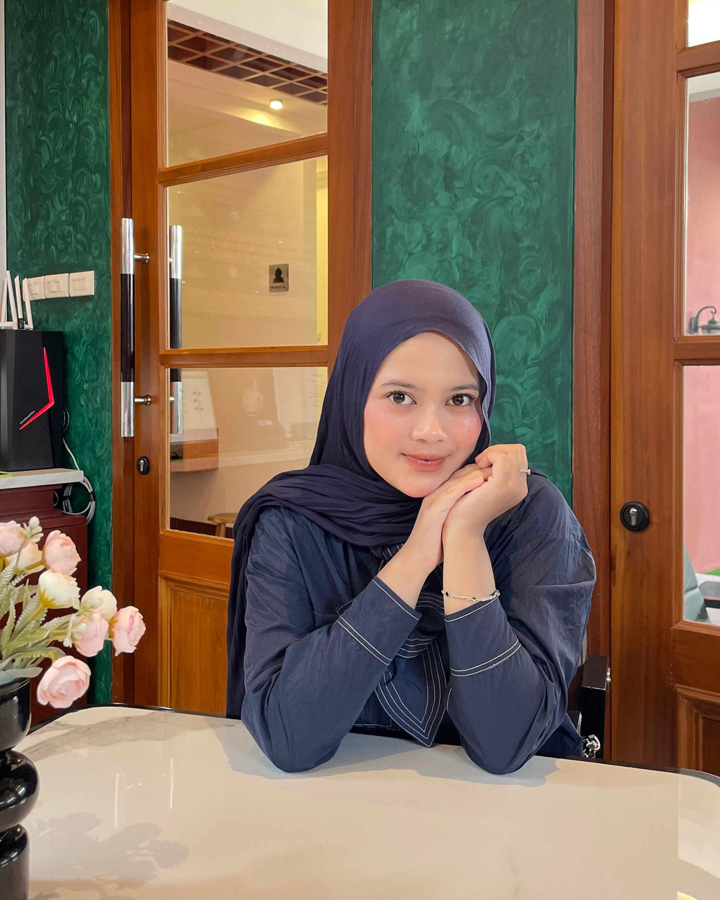

Selamat Datang di Website Pribadi
Ghefira Zahira Sofa
Front-End Web Development

1. Memiliki pengalaman langsung menggunakan ReactJS & Tailwind CSS saat KP.
2. Mampu belajar framework front-end baru dengan cepat.
3. Bisa bekerja dalam tim maupun individu.
1. Masih terbatas di front-end (kurang mendalami back-end).
2. Perlu peningkatan di bidang software testing & dokumentasi.
1. Banyak referensi, tutorial, dan komunitas ReactJS & Tailwind CSS.
2. Tren digitalisasi jasa membuka peluang topik penelitian ini diterapkan.
3. Bisa dikembangkan ke tahap full-stack untuk skripsi.
1. Perubahan cepat framework front-end (update bisa membuat kode lama deprecated).
2. Tingkat persaingan tinggi dengan mahasiswa lain yang memilih tema web development.
3. Koneksi internet tidak selalu stabil untuk pengembangan berbasis online.
Mahasiswa lain bisa dengan cepat membuat sistem serupa karena banyak template/framework tersedia.
Framework (ReactJS, Tailwind) bersifat open source dan gratis, tidak tergantung vendor.
Dosen pembimbing/penguji memiliki banyak alternatif topik, sehingga skripsi harus punya nilai tambah.
Sistem SaaS siap pakai (misalnya Trello, Notion, atau aplikasi manajemen layanan lain) bisa menggantikan, namun sistem custom tetap unggul karena fleksibel.
Banyak mahasiswa mengambil tema web development, sehingga diferensiasi sangat penting (contohnya: fitur role user, transparansi servis, dan tampilan modern).